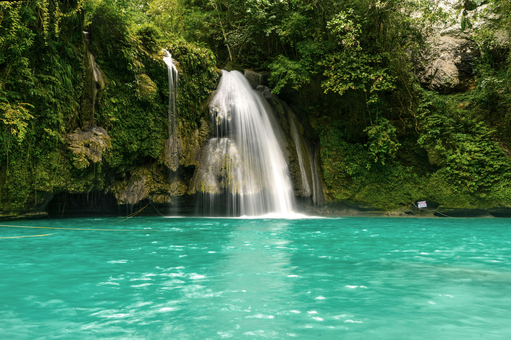
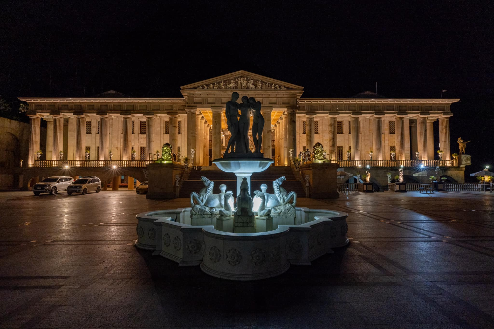

The 8.9-km iconic CCLEX is PH's longest & tallest bridge that links Cebu City to the town of Cordova.

CLC Cebu Tours
KAWASAN
FALLS
Kawasan Falls is a multi-layered waterfall system located in Barangay Matutinao in the town of Badian, Cebu.
It is a must visit if you want to take a vacation in Cebu because of its beautiful turquoise water.

CLC Cebu Tours
TEMPLE OF
LEAH
Temple of Leah is one of the famouse tourist spot to visit in Cebu. A Roman-Style shrine built by Teodorico Soriano Adarna in honor of his late wife, Leah Villa Albino-Adarna.
CLC Cebu Tours
OSLOB
Whale Watching
Swim together with whale sharks in their natural habitat in Oslob, Cebu. Oslob Whale Shark watching offers an unforgettable experience and one of the best place to visit in Cebu.